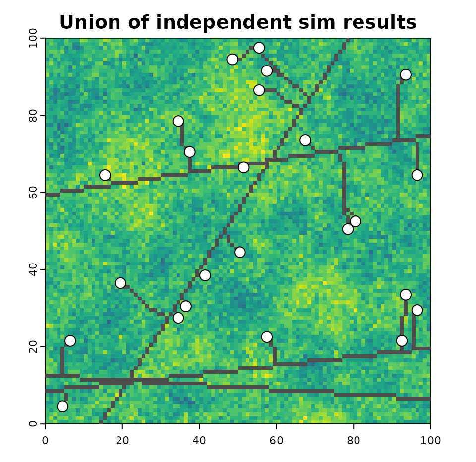

Introduction
This vignette provides a tutorial on the use of the roads package for the spatial simulation of future roads development under a given resource development scenario. This tutorial, which borrows heavily from a demonstration written by Kyle Lochhead and Tyler Muhly in 2018, will focus primarily on the projectRoads function of the roads package, as it is responsible for performing the simulation. Example data sets used below are included in the package as CLUSexample and demoScen.
In the context of this package, resource development scenarios are represented by three components:
- Cost Layer: a spatial, gridded cost layer covering the entire landscape, wherein each cell value represents the cost of new road development through it.
- Existing Road Network: a spatial, representation of the existing road network within the landscape.
- Landings: a set of locations where new resource development is to take place.
Given an input resource development scenario, projectRoads will simulate new roads between the existing road network and the landings using one of three algorithms:
- Snapping
- Least-cost path (LCP)
- Minimum spanning tree (MST)
The output of projectRoads is a list of simulation results referred to as a “sim list”. The list contains five elements:
- roads: the projected road network, including new and input roads.
- costSurface: the input cost surface, this is not updated to reflect the new roads that were added.
- roadMethod the road simulation method used.
- landings the landings used in the simulation.
- g the graph that describes the cost of paths between each cell in the cost raster. This is updated based on the new roads so that vertices were connected by new roads now have a cost of 0. This can be used to avoid recomputing the graph in a simulation with multiple time steps.
Resource development scenario
1. Cost layer
The cost of new roads development within a landscape must be provided as a single, numeric RasterLayer object. Each cell of this raster represents the cost of new road development (the definition of which is up to the user) through it. The total cost of the development of a new road segment is considered to be the sum of the cost raster cells that it traverses.
- The traversal cost of existing road segments is assumed to be zero. If existing roads are not 0 in the cost layer they can be “burned in” by setting
roadsInCost = FALSE. - The extent of the landscape of interest is assumed to match the extent of the specified cost raster layer.
- The coordinate reference system (CRS) of this raster must match all other input data-sets.
- While the cell size (or resolution) of this cost raster is up the user, it is important to remember that a unit area of road is assumed to take up an entire cell.
costRaster <- CLUSexample$cost2. Existing road network layer
The state of the existing roads network must be specified to the projectRoads method. This specification is made in the form of a sf object with geometry type “LINES”, a SpatialLines object, or a RasterLayer.
The roads network included in the CLUSexample data-set is a raster but is converted to a line to make plotting easier.
## existing roads network raster from the CLUSexample data-set
existingRoadsRast <- roads::CLUSexample$roads
# Note rasterToLineSegments only works for simple road networks
# roadsLine <- roads::CLUSexample$roads %>% rasterToLineSegments()
# Road must not be flat b/c weird issue in sf package #1730
roadsLine <- sf::st_sfc(geometry = sf::st_linestring(
matrix(c(0.5, 4.5, 4.5, 4.51),
ncol = 2, byrow = T)
)) %>%
sf::st_as_sf()3. Landings layer(s)
Landings, or resource development locations, that are to be connected to the existing road network can be specified to the projectRoads method in a variety of forms. These include specification as:
- A logical
RasterLayerobject with cell values ofTRUEfor landings, - A
SpatialPointsorSpatialPointsDataFrame{sp} object with points representing landings, - A matrix with at least two columns, with columns 1 and 2 representing x any y coordinates of landing locations respectively,
- A
SpatialPolygonsorSpatialPolygonsDataFrame{sp} object with polygons representing landings, - A sf {
sf} object with geometry type “POINTS” or “POLYGONs”
If the landings are polygons then the centroid is used as the destination for new roads. For more control or to have more than one landing per polygon see Multiple landings per harvest block below.
## landings as spatial points
landings <- roads::CLUSexample$landings
## plot example scenario
plot(costRaster, col = rastColours, main = 'Example Scenario')
plot(roadsLine, add = TRUE)
plot(landings, add = TRUE, pch = 19)
points(x=5.6,y=4.5,pch=19,xpd=TRUE)
text(x=5.8,y=4.5,labels='landing',adj=c(0,0.4),xpd=TRUE)
lines(x=c(5.3,5.6),y=c(4.2,4.2),lwd=2,xpd=TRUE)
text(x=5.75,y=4.2,labels='roads',adj=c(0,0.3),xpd=TRUE)
Notice that the top row of the raster has a cost of zero. This row is where, in this scenario, an existing road traverses the landscape.
Simulation of new roads development
Simulation methods
1. Snapping
This approach simply ‘snaps’ a landing to the nearest existing road segment. Since the snapping is done for each landing it is also called an independent path method.
## project new roads using the 'snap' approach
projRoads_snap <- roads::projectRoads(landings, costRaster, roadsLine,
roadMethod = 'snap')
#> 0s detected in cost raster, these will be considered as existing roads
## plot the cost raster, landings, and roads segments to the landings
plot(costRaster, col = rastColours, main = "'Snapped' roads")
points(landings, pch = 19, col = 'red')
plot(projRoads_snap$roads, add = TRUE)
## update legend
points(x = 5.5, y = 4.8, pch = 19, xpd = TRUE, col = 'red')
text(x = 5.7, y = 4.8, labels = 'landing', adj = c(0, 0.4), xpd = TRUE)
lines(x = c(5.3, 5.6), y = c(4.2, 4.2), lwd = 2, xpd = TRUE)
text(x = 5.75, y = 4.2, labels = 'roads', adj = c(0, 0.3), xpd = TRUE)
Using this approach, a few issues would arise:
parallel roads are not realistic since there is no branching and this leads to increased numbers of roads;
costs are not included (i.e., slope and barriers like large water bodies).
This means this approach, while simple to implement, would over estimate the amount of simulated roads.
2. Least Cost Paths (LCP)
This approach builds upon the snapping approach by assuming a ‘cost directed’ path (i.e., “as the wolf runs”) for each landing to the existing road network. This approach requires that a cost surface be provided and used to build a mathematical graph using igraph and takes considerably longer to compute.
Once the graph is built, the least cost path between any two vertices is determined using Dijkstra’s algorithm, which is implemented in the shortest_paths function in igraph. The graph can be easily updated to simulate the change in the cost surface from dynamically developing roads during the simulation. Note, that this dynamic behaviour would not be possible in a pre-solve of the road network. To implement a pre-solve approach the igraph function all_shortest_paths can be used to calculate all shortest paths between pairs of vertices; however, this is not included here.
## project new roads using the 'LCP' approach
projRoads_lcp <- roads::projectRoads(landings,
costRaster,
roadsLine,
roadMethod = 'lcp')
#> 0s detected in cost raster, these will be considered as existing roads
## plot the cost raster and overlay it with new roads
plot(costRaster, col = rastColours, main = "'LCP' roads")
plot(projRoads_lcp$roads, add = TRUE)
points(landings, pch = 19, col = 'red') ## landings points
## legend
points(x = 5.5, y = 4.8, pch = 19, xpd = TRUE, col = 'red')
text(x = 5.7, y = 4.8, labels = 'landing', adj = c(0, 0.4), xpd = TRUE)
lines(x = c(5.3, 5.6), y = c(4.2, 4.2), lwd = 2, xpd = TRUE)
text(x = 5.75, y = 4.2, labels = 'roads', adj = c(0, 0.3), xpd = TRUE)
The main disadvantage of this approach is that roads are developed independently. The least cost path may produce parallel or redundant roads since a path is made for each target to the corresponding closest point. This may mimic road development since road tenures give licensees the right to limit other industrial users from using their road (i.e., gated roads); thereby forcing the other industrial user to consider building a nearly parallel road. In some cases there will be branching, where two roads connecting two landings to an existing road network will use the same least cost path; however, this will be conditional on the spatial configuration of the local cost surface and the existing road network. Thus, the amount of road being developed from the LCP is dependent on the local cost surface and may be either higher or lower than the corresponding snap approach.
3. Minimum Spanning Tree (MST) with Least Cost Paths (LCP)
The MST approach builds upon the LCP approach by determining if landings should be connected to one another before being connected to the existing road network. In the MST approach, LCPs are estimated both between the landings and between landings and the existing road network. These distances are then used as nodes for solving a minimum spanning tree. The sequence of vertices from the LCPs are then constructed following the solution to the MST.
## project new roads using the 'MST' approach
projRoads_mst <- roads::projectRoads(landings,
costRaster,
roadsLine,
roadMethod = 'mst')
#> 0s detected in cost raster, these will be considered as existing roads
## plot the cost raster and overlay it with new roads
plot(costRaster, col = rastColours, main = "'MST' roads")
plot(projRoads_mst$roads, add = TRUE)
points(landings, pch = 19, col = 'red') ## landings points
## legend
points(x = 5.5, y = 4.8, pch = 19, xpd = TRUE, col = 'red')
text(x = 5.7, y = 4.8, labels = 'landing', adj = c(0, 0.4), xpd = TRUE)
lines(x = c(5.3, 5.6), y = c(4.2, 4.2), lwd = 2, xpd = TRUE)
text(x = 5.75, y = 4.2, labels = 'roads', adj = c(0, 0.3), xpd = TRUE)
The MST approach will produce the least amount of roads (relative to the other approaches), given targets are allowed to connect to other target locations. This approach simulates a realistic view of road branching relative to the other two approaches. However, given the need to get LCP distances, solve a MST and then construct the LCPs, it will likely be the most costly in terms of computation time.
One-time versus multi-temporal simulation
Roads development simulation can be performed either for a single time step (one-time) or for multiple time steps. This section will use a demonstration scenario demoScen data-set that is included with the roads package. There are four different sets of landings.
## colours for displaying cost raster
if(requireNamespace("viridis", quietly = TRUE)){
# Use colour blind friendly palette if available
rastColours2 <- c('grey50', viridis::viridis(30))
} else {
rastColours2 <- c('grey50', terrain.colors(30))
}
## scenario
scen <- demoScen[[1]]
## landing sets 1 to 4 of this scenario
land.pnts <- scen$landings.points[scen$landings.points$set%in%c(1:4),]
## plot the cost raster and landings
par(mar=par('mar')/2)
plot(scen$cost.rast, col = rastColours2, main = 'Cost and landings (by set)')
plot(land.pnts, add = TRUE, pch = 21, cex = 2, bg = 'white')
text(land.pnts@coords, labels = land.pnts$set, cex = 0.6, adj = c(0.5, 0.3),
xpd = TRUE)
One-time simulation
If landings, costs, and roads are all specified to projectRoads, then a one-time road simulation will be performed that returns a list object holding the projected roads and related information. This can be repeated multiple times for different road building scenarios but each simulation will be independent of previous simulations. This would be appropriate if each landing set represented alternate scenarios for development.
## project roads for landing sets 1 to 4, with independent one-time simulations
oneTime_sim <- list() ## empty list
for (i in 1:4){
oneTime_sim <- c(oneTime_sim,
roads::projectRoads(land.pnts[land.pnts$set==i,],
scen$cost.rast,
scen$cost.rast==0,
roadMethod='mst')$roads)
}
#> 0s detected in cost raster, these will be considered as existing roads
#> 0s detected in cost raster, these will be considered as existing roads
#> 0s detected in cost raster, these will be considered as existing roads
#> 0s detected in cost raster, these will be considered as existing roads
## plot
oldpar <- par(mfrow = c(2, 2), mar = par('mar')/2)
for (i in 1:4){
oneTime_sim[[i]][!oneTime_sim[[i]]] <- NA
plot(scen$cost.rast, col = rastColours2,
main = paste0('Landings set ', i),
legend = FALSE)
plot(oneTime_sim[[i]], add = TRUE, col = "grey50", legend = FALSE)
plot(land.pnts[land.pnts$set == i, ], add = TRUE,
pch = 21, cex = 1.5, bg = 'white')
}
While the results of these one-time simulations may be fine when looking at each landings scenario/set independently (e.g. each representing a possible scenario for time t=1), they are likely not appropriate for cases where all landings sets follow a temporal development sequence (e.g. set 1 is development at time t=1, set 2 is development at time t=2, and so on). Independent one-time simulations do not take into account the fact that, for a given time step, existing roads for a given simulation should be the union of existing roads at time t=0 and all roads simulation results leading up to the current step. For example, existing roads input into simulation at time t=2 (landings set 2), would be the union of existing roads at time t=0 and projected roads at time t=1 (landings set 1).
## raster representing the union of completely independent simulations for multiple sets
oneTime_sim <- raster::stack(oneTime_sim)
independent <- any(oneTime_sim == 1)
## set non-road to NA for display purposes
independent[!independent] <- NA
## plot
plot(scen$cost.rast, col = rastColours2,
main = 'Union of independent sim results',
legend = FALSE)
plot(independent, col = 'grey30', add = TRUE, legend = FALSE)
plot(land.pnts, add = TRUE, pch = 21, cex = 1.5, bg = 'white')
Multi-temporal simulation
Multi-temporal (multiple time steps) roads projections can be performed by projectRoads, by providing the list produced by a previous simulation run (sim list) to the sim argument and the landings for the current time period. The function uses the sim list as a starting point and does not need to recompute the graph used to determine the least cost path. This can be implemented in a loop.
## continuing on with demo scenario 1
## landing sets 1 to 4 of this scenario as a raster stack
land.stack <- scen$landings.stack[[1:4]]
# initialize sim list with first landings set
multiTime_sim <- list(projectRoads(land.stack[[1]], scen$cost.rast,
scen$road.line))
#> 0s detected in cost raster, these will be considered as existing roads
# iterate over landings sets using the sim list from the previous run as input
for (i in 2:raster::nlayers(land.stack)) {
multiTime_sim <- c(
multiTime_sim,
list(projectRoads(sim = multiTime_sim[[i-1]], landings = land.stack[[i]]))
)
}
#> 0s detected in cost raster, these will be considered as existing roads
#> Burning in roads to cost raster from sf
#> 0s detected in cost raster, these will be considered as existing roads
#> Burning in roads to cost raster from sf
#> 0s detected in cost raster, these will be considered as existing roads
#> Burning in roads to cost raster from sf
par(mfrow = c(3, 2))
par(mar = par('mar')/2)
plot(scen$cost.rast, col = rastColours2, main = 'Roads at time t = 0',
legend = FALSE)
plot(scen$road.line, col = 'grey30', add = TRUE, legend = FALSE)
for (i in 1:length(multiTime_sim)){
plot(multiTime_sim[[i]]$costSurface, col = rastColours2,
main = paste0('Roads at time t = ', i), legend = FALSE)
plot(multiTime_sim[[i]]$roads, col = 'grey30', add = TRUE, legend = FALSE)
plot(land.pnts[land.pnts$set == i, ], add = TRUE, pch = 21,
cex = 1.5, bg = 'white')
if (i >= 2){
plot(land.pnts[land.pnts$set < i, ], add = TRUE, pch = 1, cex = 1.5)
plot(land.pnts[land.pnts$set == i, ], add = TRUE, pch = 21,
cex = 1.5, bg = 'white')
}
}
Multiple landings per harvest block
Often harvest information is available as polygons showing the cutover area but the point locations of landings are not known. The roads package includes the getLandingsFromTarget function to address these situations. By default getLandingsFromTarget will use the centroid of a polygon as the landing but you can also specify a sampleType of “random” or “regular” and a landingDens in landings per unit area to generate multiple landing points with in the harvest block.
harvPoly <- demoScen[[1]]$landings.poly
outCent <- getLandingsFromTarget(harvPoly)
raster::plot(harvPoly)
plot(outCent, col = "red", add = TRUE)
# Get random sample with density 0.02 pts per unit area
outRand <- getLandingsFromTarget(harvPoly, 0.02, sampleType = "random")
prRand <- projectRoads(outRand, scen$cost.rast, scen$road.line)
#> 0s detected in cost raster, these will be considered as existing roads
plot(scen$cost.rast, main = "Random Landings in Harvest Blocks",
col = rastColours2)
plot(harvPoly, add = TRUE)
plot(prRand$roads, add = TRUE, col = "grey50")
plot(outRand, col = "red", add = TRUE)
# Get regular sample with density 0.02 pts per unit area
outReg <- getLandingsFromTarget(harvPoly, 0.02, sampleType = "regular")
prReg <- projectRoads(outReg, scen$cost.rast,scen$road.line)
#> 0s detected in cost raster, these will be considered as existing roads
#> Warning: attribute variables are assumed to be spatially constant throughout all
#> geometries
plot(scen$cost.rast, main = "Regular Landings in Harvest Blocks",
col = rastColours2)
plot(harvPoly, add = TRUE)
plot(prReg$roads, add = TRUE, col = "grey50")
plot(outReg, col = "red", add = TRUE)
# clean up
par(oldpar)The regular sampling method may be the most realistic since it ensures that landings are spaced apart from each other.
Note
This vignette is partially copied from Kyle Lochhead & Tyler Muhly’s 2018 CLUS example